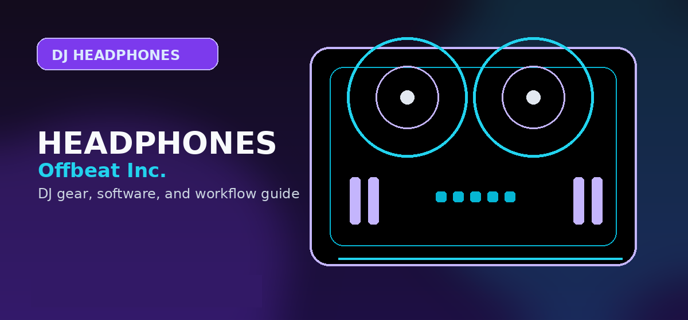

Best Wireless DJ Headphones 2026: Bluetooth Latency & Isolation Comparison
Comprehensive guide to best wireless DJ headphones 2026 Bluetooth latency isolation comparison with practical recommendations and current buying notes — updated 2026.

Disclosure: This page uses affiliate links. We may earn a commission at no extra cost to you. Full disclosure →
For years, the "wireless" label was a dealbreaker for professional DJs. The dreaded Bluetooth latency—that slight delay between hitting a cue point and hearing the beat—made precise beatmatching nearly impossible. However, 2026 marks a turning point. With the widespread adoption of Bluetooth LE Audio and the LC3 codec, the latency gap has shrunk to a point where wireless monitoring is finally viable for everything from bedroom mixing to mobile events. But "viable" isn't the same as "perfect." When you're standing next to a 10,000-watt Funktion-One system, isolation is just as critical as speed. In this guide, we compare the top wireless contenders of 2026, analyzing whether their Bluetooth performance and noise isolation can actually survive the pressure of a live booth.
The Latency Battle: Bluetooth LE Audio & LC3
In 2026, the industry has largely moved past the lag-heavy SBC and AAC codecs. The new standard, LC3 (Low Complexity Communication Codec), allows for significantly higher audio quality at lower bitrates and, more importantly, drastically reduced latency. While older wireless headphones suffered from delays of 150ms to 200ms, the latest DJ-centric wireless models have pushed this down to the 20ms–40ms range. For most DJs, this is virtually imperceptible. However, for high-bpm genres like Drum & Bass or Psytrance, even a 30ms shift can feel "off." The best 2026 models now include a "Low Latency Mode" that prioritizes speed over fidelity, ensuring your cueing remains tight.
Isolation: ANC vs. Passive Seal
Isolation is where many wireless headphones fail. Active Noise Cancellation (ANC) is fantastic for flights, but in a DJ booth, it can be a liability by filtering out the very frequencies you need to hear from the room's monitors. The gold standard for 2026 remains a hybrid approach: a heavy-duty passive seal to block out the "thump" of the subs, supplemented by adaptive ANC for low-frequency drone reduction. The key is a high-clamp force and memory foam ear pads that create a vacuum-like seal. Without this, the bleed from the club's main PA will drown out your headphones, forcing you to crank the volume to dangerous levels.
Top Wireless Contenders for 2026
The 2026 market is dominated by a few heavy hitters who have successfully integrated wireless tech into rugged frames.
- Pioneer DJ HDJ-X10BT — The industry workhorse, offering the best balance of durability and LC3 integration. Ultra-rugged build for club use.
- Sennheiser HD 25 Wireless (2026 Edition) — Legendary high SPL with seamless wireless toggle. Unbeatable clarity for high-volume environments.
- V-MODA Crossfade 3 Wireless — Indestructible exoskeleton with aggressive low-end response. Best comfort and aesthetic for long mobile sets.
- Sony MDR-7506 Wireless — Studio-to-booth transition, flatter response curve. Most honest sound for producer/DJ hybrids.
Wired vs. Wireless: The Professional Trade-off
Despite the leaps in Bluetooth technology, the "hybrid" model is the only professional choice in 2026. Every top-tier wireless DJ headphone now ships with a high-quality detachable coiled cable. Why? Because batteries die and interference happens. In a high-interference environment with hundreds of smartphones and wireless mics, Bluetooth can occasionally stutter. Professional DJs use wireless for preparation, programming, and mobile gigs where cable clutter is an issue, but they switch to the wired connection for headline sets. The ideal 2026 setup is one where the transition from Bluetooth to wired is instantaneous and requires zero menu diving.
2026 Wireless DJ Headphone Comparison
| Model | Est. Price | Latency (LC3) | Isolation Type | Pro | Con |
|---|---|---|---|---|---|
| Pioneer HDJ-X10BT | $349 | ~30ms | Hybrid ANC/Passive | Ultra-rugged build | Heavy on the head |
| Sennheiser HD 25 W | $299 | ~25ms | High Passive | Extreme clarity/SPL | On-ear can fatigue |
| V-MODA Crossfade 3W | $329 | ~35ms | Active ANC | Massive bass response | Not for monitoring |
| Sony MDR-7506 W | $249 | ~40ms | Passive | Accurate frequency | Fragile hinges |
Battery Life and Charging: What You Actually Need
Most DJ headphones marketed to professionals claim 30-50 hours of battery life, but realistically, you only need 8-12 hours per session. The key is charging strategy: charge between sets or before your gig starts. Premium 2026 models feature fast-charge capability (30 minutes to 80%) and multipoint Bluetooth, allowing you to pair with both your mixer and a backup phone. The real advantage of wireless is not endless battery — it's convenience during setup and breakdown. You won't have to coil cables around your neck or worry about tangling between songs.
Comfort During Long Sets: What to Expect
DJ headphones need to survive 4-6 hour sets without discomfort. The on-ear Sennheiser HD 25 Wireless is legendary but causes fatigue for some after 3+ hours. The over-ear Pioneer HDJ-X10BT is heavier (280g) but distributes weight better for extended sessions. Comfort is highly personal — some prefer the reduced clamp force of the V-MODA Crossfade 3 Wireless, while others need the rock-solid seal of closed-back designs. Pro tip: try before you buy. Most retailers accept returns within 30 days if comfort isn't right. Your ears will thank you for prioritizing fit over brand name.
Connection Stability and Interference Management
High-interference DJ booths with wireless mics, routers, and hundreds of phones can occasionally cause Bluetooth stuttering. The best wireless DJ headphones in 2026 handle this through Bluetooth 5.3+ with improved range and multi-antenna designs. Most professionals mitigate interference risk by always carrying a high-quality coiled cable. The hybrid approach — wireless for prep, wired for live performance — remains the gold standard. If you plan to use wireless exclusively in a high-interference environment, test the specific model in your venue before committing to purchase.
Quick Verdict
- For the Club Professional: Go with the Pioneer DJ HDJ-X10BT. Its durability and industry-standard sound make it the safest bet.
- For the Purist/Techno DJ: The Sennheiser HD 25 Wireless is unbeatable for high-volume environments where clarity is king.
- For the Mobile/Wedding DJ: The V-MODA Crossfade 3 Wireless offers the best aesthetic and comfort for long sets.
- For the Producer/DJ Hybrid: The Sony MDR-7506 Wireless provides the most honest sound for both mixing and monitoring.
Whether you are upgrading your current rig or building your first professional kit, the shift to wireless in 2026 is finally a practical move. Just remember to always keep your backup cable within reach. Check out the latest deals and availability for these models via our affiliate links below to get the best current pricing.
Bottom line: Sony MDR-7506 Wireless is the best value wireless option for producer/DJ hybrids — flat, accurate frequency response for both monitoring and mixing. For live DJ performance, wired remains strongly recommended; Bluetooth latency is a real issue at high BPM. Check the Sony MDR-7506 W on Amazon →
Shop on Amazon
Compare wireless headphone prices on Amazon — often discounted with Prime.
Also on zZounds
Flexible financing · No credit check · 45-day price guarantee.
Frequently Asked Questions
Can you use wireless headphones for DJing?
Yes, but with caution. Bluetooth adds 20–200ms latency which can throw off beatmatching. Look for headphones with aptX Low Latency or use the wired mode included in most DJ headphones.
What is the best wireless DJ headphone in 2026?
The Sony MDR-7506 with Bluetooth adapter or the V-Moda Crossfade 3 Wireless are top picks. For true wireless with DJ-quality sound, the Sennheiser HD 25 Plus with Bluetooth module is excellent.
Is Bluetooth latency a problem for DJing?
Standard Bluetooth (SBC codec) has 150–300ms delay — too high for live mixing. Headphones with aptX Low Latency reduce this to ~40ms, which most DJs find workable.
Do DJ headphones need to be noise-cancelling?
Noise cancellation is optional. Club DJs often prefer open or closed-back headphones for single-ear monitoring. Active noise cancellation can distort the monitoring sound.
What makes DJ headphones different from regular headphones?
DJ headphones are built for: 180-degree swivel for single-ear monitoring, higher impedance to handle mixer outputs, flat/neutral sound for accurate mixing, and durability for frequent use.